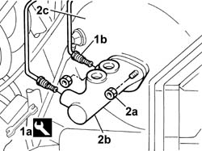
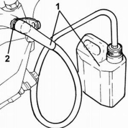
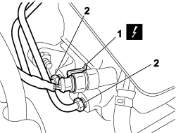
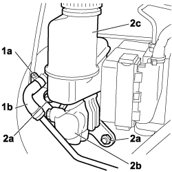
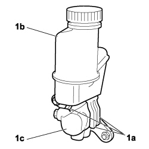

3330C14 (PUMP) - MASTER CYLINDER .R.R for versions with A.B.S.
- Path
- Procedures > 33 BRAKES > 3330 HYDRAULIC BRAKE SYSTEM > 3330C BRAKE PUMP, RESERVOIR AND LOAD PROPORTIONING VALVE > 3330C14 (PUMP) - MASTER CYLINDER .R.R for versions with A.B.S.
- Kind
- repair procedure (removal / refitting; the operation number is the code)
- Applies to
- engines: 1.4 8v, 1.6 16v, 1.3 JTD 16V, 1.9 JTD 8V; production: da 12/03; only with equipment: MY 2005
- Interactive page
- https://sloeber94.github.io/elrnDB-fDbl/en/#/2584657
Applies to: engines: 1.6 16v, 1.3 JTD 16V, 1.9 JTD 8V, 1.9 DIESEL; all production periods
 Removing
Removing
 Refitting
RefittingOpen the bonnet.
Op. 5530B52 BATTERY SUPPORT/DRIP TRAY - R.R..
Op. 3330C41 BRAKE FLUID RESEVOIR CAP - R.R. FOR VERSIONS WITH ABS.
Op. 3330C30 BRAKE FLUID RESERVOIR - R + R AND WASH INSIDE.
1. Use wrench (1a) to disconnect brake pipe fittings (1b) on the master cylinder.
Description | Code | |
|---|---|---|
1a | Box spanner for brake connector | 1.856.132.000 |
2. Unscrew both nuts (2a) securing master cylinder (2b) and withdraw from brake servo (2c).

Applies to: engines: 1.6 16v, 1.3 JTD 16V, 1.9 JTD 8V, 1.9 DIESEL; all production periods
Refitting
RemovingRefit the master cylinder and secure by tightening nuts to the specified torque.
Fastening | Component | dia | Value (daNm) | |
|---|---|---|---|---|
- | Nut | BRAKE MASTER CYLINDER (PUMP) | - | 2.5 ± 0.4 |
Connect the brake pipe fittings to the master cylinder using an appropriate wrench.
Description | Code | |
|---|---|---|
- | Box spanner for brake connector | 1.856.132.000 |
Fastening | Component | dia | Value (daNm) | |
|---|---|---|---|---|
- | Connector | FRONT BRAKE RIGID PIPE FROM MASTER CYLINDER | M10 x 1 | 1.4 |
Op. 3330C30 BRAKE FLUID RESERVOIR - R + R AND WASH INSIDE.
Op. 0010T64 BRAKE AND/OR CLUTCH FLUID CHECK LEVEL AND TOP UP AS NECESSARY.
Op. 0010T65 HYDRAULIC BRAKE SYSTEM - BLEED AIR.
Op. 3330C41 BRAKE FLUID RESEVOIR CAP - R.R. FOR VERSIONS WITH ABS.
Op. 5530B52 BATTERY SUPPORT/DRIP TRAY - R.R..
Close the bonnet.
Applies to: engines: 1.4 8v, 1.6 16v, 1.3 JTD 16V, 1.9 JTD 8V; production: da 12/03; only with equipment: MY 2005
Removing
Refitting- Turn the ignition key to the OFF position.
- Disconnect the negative battery terminal.
Description | Connector | |
|---|---|---|
BATTERY |
Op. 5530B52 BATTERY SUPPORT/DRIP TRAY - R.R.
Op. 3330C41 BRAKE FLUID RESEVOIR CAP - R.R. FOR VERSIONS WITH ABS
Op. 3330C30 BRAKE FLUID RESERVOIR - R + R AND WASH INSIDE
1. Connect a suitable recipient to the bleed valve of one front brake caliper.
2. Loosen the bleed valve and pump the brake pedal several times to drain the fluid out of the brake fluid reservoir.

Applies to: engines: 1.4 8v, 1.6 16v, 1.3 JTD 16V, 1.9 JTD 8V; production: da 12/03; only with equipment: MY 2005
1. Disconnect the electrical connection for the brake fluid minimum level warning light switch.
2. Undo the connectors for the rigid fluid pipes from the master cylinder.
Description | Connector | |
|---|---|---|
1 | BRAKE FLUID LEVEL SENSOR (SWITCH) |

Applies to: engines: 1.4 8v, 1.6 16v, 1.3 JTD 16V, 1.9 JTD 8V; production: da 12/03; only with equipment: MY 2005
1. Remove retaining collar (1a) and disconnect system supply pipe (1b) to the clutch pump.
2. Undo the nuts (2a) and remove the master brake cylinder (2b) complete with fluid reservoir (2c).

Applies to: engines: 1.4 8v, 1.6 16v, 1.3 JTD 16V, 1.9 JTD 8V; production: da 12/03; only with equipment: MY 2005
1. Act on the clips (1a) and remove the oddments compartment assembly (1b).

Applies to: engines: 1.4 8v, 1.6 16v, 1.3 JTD 16V, 1.9 JTD 8V; production: da 12/03; only with equipment: MY 2005
Refitting
Removing- Install the master cylinder on the reservoir and do up the clips.
- Tighten the fittings on the rigid pipes from the master cylinder to the electrohydraulic control unit to the specified torque.
Fastening | Component | dia | Value (daNm) | |
|---|---|---|---|---|
Connector | Brake pipe connectors | M10 | 1.4 ÷ 1.8 |
- Connect the system supply pipe to the clutch pump and apply a new retaining collar.
- Connect the electrical connection to the brake fluid minimum level warning light switch.
Description | Connector | |
|---|---|---|
BRAKE FLUID LEVEL SENSOR (SWITCH) |
Op. 3330C30 BRAKE FLUID RESERVOIR - R + R AND WASH INSIDE
Op. 3330C41 BRAKE FLUID RESEVOIR CAP - R.R. FOR VERSIONS WITH ABS
Op. 5530B52 BATTERY SUPPORT/DRIP TRAY - R.R.
Op. 0010T64 BRAKE AND/OR CLUTCH FLUID CHECK LEVEL AND TOP UP AS NECESSARY
Op. 0010T65 HYDRAULIC BRAKE SYSTEM - BLEED AIR
- Connect the negative battery terminal.
Description | Connector | |
|---|---|---|
BATTERY |
Topics linked from this page (8)
- 0010T64 brake and or clutch fluid check level and top up as necessary
- 0010T65 hydraulic brake system bleed air
- 3330C30 brake fluid reservoir - r + r and wash inside
- 3330C41 brake fluid resevoir cap - r r for versions with abs systems
- 5530B10 battery - r+r
- 5530B52 Battery DRIP TRAY/SUPPORT - R.R.
- A001 BATTERY
- K025 BRAKE FLUID LEVEL SENSOR (SWITCH)